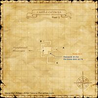
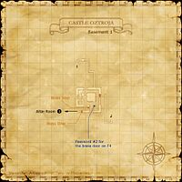
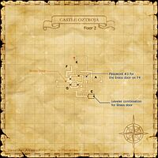
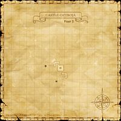
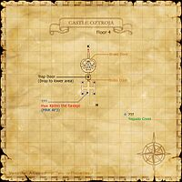
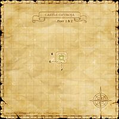
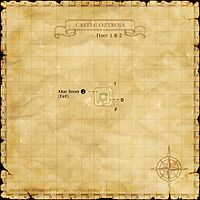

Description
Castle Oztroja is a dungeon in Aragoneu.
Map

Involved in Quests / Missions
| Quest / Mission | Type | Starter | Location |
|---|---|---|---|
| A Boy's Dream | PLD AF 2 | Ailbeche | Northern San d'Oria (J-8) |
| Borghertz's Harmonious Hands | BRD AF | Guslam | Upper Jeuno (H-8) |
| Borghertz's Shadowy Hands | DRK AF | Guslam | Upper Jeuno (H-8) |
| Borghertz's Sneaky Hands | THF AF | Guslam | Upper Jeuno (H-8) |
| Borghertz's Vermillion Hands | RDM AF | Guslam | Upper Jeuno (H-8) |
| Fire and Brimstone | RNG AF 2 | Perih Vashai | Windurst Woods (K-7) |
| For the Birds | General | Koblakiq | Oldton Movalpolos (H-11) |
| Onion Rings | General | Kohlo-Lakolo | Port Windurst (G-5) |
| Prelude of Black and White | WHM AF 2 | Pieuje | Chateau d'Oraguille (H-8) |
| Scattered into Shadow | BST AF 2 | Brutus | Upper Jeuno (G-7) |
| The Talekeeper's Truth | WAR AF 2 | Deidogg | Bastok Mines (H-6) |
| True Strength | MNK AF 3 | Ayame | Metalworks (K-7) |
| Whence Blows the Wind | Genkai 3 | Maat | Ru'Lude Gardens (H-5) |
NPCs
| Name | Location | Type |
|---|---|---|
| Antiqix | pos=F-8 | Dynamis Vendor |
| Brass Statue | H-7 | Passageway Machine |
| Daa Bola the Seer | I-7 | Quest NPC |
| Kaa Toru the Just | pos=H-5 | Mission NPC |
| Tebhi | Question | Quest NPC |
Notorious Monsters
Regular Monsters


Event Monsters
| Name | Level | Drops | Steal | Family | Spawns | Notes |
|---|---|---|---|---|---|---|
| Huu Xalmo the Savage | 63 | Xalmo Feather | — |  YagudoImage source YagudoImage source | 1 | Quest: True Strength; A, L, S |
| Odontotyrannus | 52 | Odontotyrannus (Item) | — |  PugilsImage source PugilsImage source | Fished Up | Quest: A Boy's Dream; A |
| Warder Partisan | question | — | — | YagudoImage source | 1; Respawn: 1-2 hr | Crystal War Revisited |
| Yagudo Muralist | — | — | — | YagudoImage source | 1 | Quest: Picture Perfect |
Maps


Story walkthroughs in this area
| Story | Mission / quest |
|---|---|
| WotG W-10 | Howl from the Heavens |
| ACP 2 | The Echo Awakens |
References
External references describe their own server or retail rules. Documented Zenith changes take precedence.
Map credits: Map 1 — HorizonXI Wiki · Map 2 — HorizonXI Wiki · Map 3 — HorizonXI Wiki · Map 4 — HorizonXI Wiki · Map 5 — HorizonXI Wiki · Map 6 — HorizonXI Wiki · Map 7 — HorizonXI Wiki. Original game maps © SQUARE ENIX; redrawn maps retain the credited authorship and license.


Additional level-75 reference
|
The birdlike Beastmen known as the Yagudo spent decades carving this stronghold out of the mountains in the Meriphataud Range. In addition to being strictly guarded, the interior of the castle is extremely complex and littered with traps and curses that only members of the Yagudo Theomilitary have been informed of.
Connecting Areas
Involved in Quests/Missions
NPCs Found Here
Coffer/Chest Contents
|
       Possible Weather Conditions
| |||||||||||||||||||||||||||||||||||||||||||||||||||||||||||||||||||||||||||||||||


Notorious Monsters Found Here
| Name | Level | Drops | Steal | Family | Spawns | Notes |
|---|---|---|---|---|---|---|
Huu Xalmo the Savage
|
63 | Yagudo | 1 | A, L, S | ||
| Mee Deggi the Punisher | 35-36 | Yagudo | 1 Respawn: 1 hr |
A, L, S | ||
| Moo Ouzi the Swiftblade | 30 | Yagudo | 1 | A, L, S | ||
Odontotyrannus
|
52 | Pugils | Fished Up | A | ||
| Quu Domi the Gallant | 35-36 | Yagudo | 1 Respawn: 1 hr |
A, L, S | ||
| Tzee Xicu the Manifest | 85 | Yagudo | 1 Respawn: 3-5 days |
A, L, T(S) | ||
| Warder Partisan | Yagudo | 1 Respawn: 1-2 hr |
||||
| Yaa Haqa the Profane | 42-43 | Yagudo | 1 | A, L, S | ||
| Yagudo Avatar | 75 | Beastcoin | Yagudo | 1 Respawn: 21-24 hr |
A, L, T(S) | |
| Yagudo High Priest | 72-74 | Beastcoin | Yagudo | 2 Respawn: 16 min |
A, L, T(S) | |
| Yagudo Templar | 72-74 | Beastcoin | Yagudo | 1 Respawn: 16 min |
A, L, T(S) | |
| Yagudo Muralist | Yagudo | 1 | ||||
HP = Detects Low HP; M = Detects Magic; Sc = Follows by Scent; T(S) = True-sight; T(H) = True-hearing JA = Detects job abilities; WS = Detects weaponskills; Z(D) = Asleep in Daytime; Z(N) = Asleep at Nighttime | ||||||

Regular Monsters Found Here
| Name | Level | Drops | Steal | Family | Spawns | Notes |
|---|---|---|---|---|---|---|
| Bastion Bats | 18-21 | Bat Triplets | 16 | A, H | ||
| Bulwark Bat | 29-31 | Giant Bats | 22 | A, H | ||
| Cutter | 29-31 | Rock Salt | Crabs | 11 Respawn: 12 min |
A, H | |
Earth Elemental
|
47-49 | Elementals | 8 | M | ||
Fire Elemental
|
47-49 | Elementals | 8 | M | ||
| Meat Maggot | 29-31 | Crawlers | 16 Respawn: 12 min |
A, L, H, Sc | ||
| Ooze | 38-40 | Slimes | 2 | A, H | ||
| Yagudo Abbot | 53-59 | Mythril Beastcoin | Yagudo | 8 | A, L, S | |
| Yagudo Assassin | 64-72 | Gold Beastcoin | Yagudo | 9 | A, L, S | |
| Yagudo Chanter | 52-57 | Mythril Beastcoin | Yagudo | 8 | A, L, S | |
| Yagudo Conductor | 63-67 | Gold Beastcoin | Yagudo | 9 | A, L, S | |
| Yagudo Conquistador | 43-47 | Mythril Beastcoin | Yagudo | 13 | A, L, S | |
| Yagudo Drummer | 33-37 | Silver Beastcoin | Yagudo | 28 Respawn: 12 min |
A, L, S | |
| Yagudo Flagellant | 62-66 69-72 |
Gold Beastcoin | Yagudo | 18 | A, L, S | |
| Yagudo Herald | 32-36 | Silver Beastcoin | Yagudo | 29 Respawn: 12 min |
A, L, S | |
| Yagudo Inquisitor | 54-58 | Mythril Beastcoin | Yagudo | 8 | A, L, S | |
| Yagudo Interrogator | 35-39 | Silver Beastcoin | Yagudo | 29 Respawn: 12 min |
A, L, S | |
| Yagudo Lutenist | 42-48 | Mythril Beastcoin | Yagudo | 14 Respawn: 15 min |
A, L, S | |
| Yagudo Oracle | 34-38 | Silver Beastcoin | Yagudo | 30 Respawn: 12 min |
A, L, S | |
| Yagudo Parasite | 45-48 | Leeches | 4 | A, L, H | ||
| Yagudo Prelate | 65-69 | Gold Beastcoin | Yagudo | 9 | A, L, S | |
| Yagudo Priest | 24-28 | Silver Beastcoin | Yagudo | 19 | A, L, S | |
| Yagudo Prior | 45-49 | Mythril Beastcoin | Yagudo | 15 | A, L, S | |
| Yagudo Sentinel | 51-56 | Mythril Beastcoin | Yagudo | 8 | A, L, S | |
| Yagudo Theologist | 23-27 | Silver Beastcoin | Yagudo | 19 | A, L, S | |
| Yagudo Votary | 22-26 | Silver Beastcoin | Yagudo | 17 | A, L, S | |
| Yagudo Zealot | 42-46 | Mythril Beastcoin | Yagudo | 14 | A, L, S | |
Yagudo's Elemental
|
?? | Elementals | 34 | |||
HP = Detects Low HP; M = Detects Magic; Sc = Follows by Scent; T(S) = True-sight; T(H) = True-hearing JA = Detects job abilities; WS = Detects weaponskills; Z(D) = Asleep in Daytime; Z(N) = Asleep at Nighttime | ||||||
Adapted from Eden Wiki: Castle Oztroja · Contributors and history · CC BY-SA 4.0. Revision 45513. Layout, links and optional background text adapted for Zenith.